# Upload picture
knitr::include_graphics("data/giphy.gif")Source: Explore Canada
Study Background
Why is this study significant?
Witnessing the Northern Lights is often described as a lifetime experience, for many, seeing the Aurora Borealis is a bucket-list event, it brings a sense of wonder and connection with the natural world. As captivating as they are, spotting the auroras can be unpredictable. Understanding the key factors that influence their visibility can greatly improve our chances of experiencing this breathtaking phenomenon. When we search for an aurora forecast, the first thing that typically appears is the KPI (Planetarische Kennziffer) metric. Yet, from personal experience, we know that this is not the only factor that guarantees an aurora sighting.
This statistical analysis aims to explore the key factors influencing the visibility of the Northern Lights, focusing on two primary variables: KPI and daylight length (seasonality). By examining the relationship between solar activity, geomagnetic conditions, and the changing length of daylight throughout the year, we can better predict optimal viewing times for aurora sightings.
The goal is to provide a data-driven framework for enthusiasts to understand when and where they are most likely to witness the Northern lights!
What are the Aurora?
The aurora, is a natural light display that occurs when charged particles from the sun collide with Earth’s upper atmosphere. These particles, primarily electrons and protons, interact with gases like oxygen and nitrogen, creating bursts of light that we see as vibrant green, purple, or red hues across the night sky.
Fun Fact: The sun goes through an 11-year cycle of solar activity, with more frequent and intense solar storms during the peak years. Experts predict that the 2024-2027 aurora season will be particularly spectacular, so be sure to mark your calendars!
Data Details
1. Geomagnetic Data
Source: NOAA Space Weather Prediction Center
Description: The K-index, a measurement of geomagnetic activity. It is a scale from 0 to 9 that indicates the strength of the Aurora Borealis
Available data: June – December 2024
# Upload picture
knitr::include_graphics("data/KPI_Scale.png")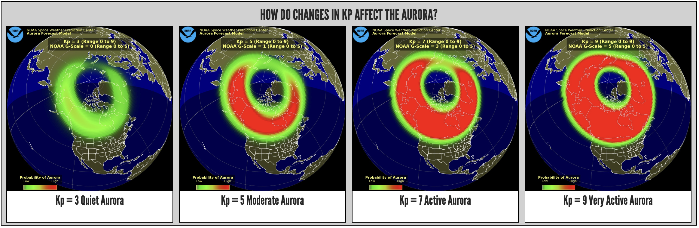
2. Northern Lights Sightings
Source: AuroraReach
Description: The Sightings data served as the ground truth for this analysis, sourced from user check-ins and public submissions of aurora sightings worldwide. These records were collected through online platforms where users upload pictures of their aurora sightings. For the period from June to December 2024, the author manually reviewed the data, assigning a value on a scale of 0 to 4 for each day based on the frequency of sightings.
Sightings Scale:
0: None
1: Very few observations
2: A few observations
3: Many observations
4: Numerous observations
3. Daylight Length
Source: timeanddate
Description: represents the duration of daylight hours in a given day. For this analysis, we used historical data from Alaska as a baseline, as the majority of aurora sightings tend to occur in regions closer to Alaska’s latitude. An additional column was created to categorize each observation by its respective season, providing context for how daylight length varies across different times of the year.
References
NOAA Space Weather Prediction Center
NOAA Space Weather Prediction Center. 2024. 5 Radio Flux and Geomagnetic Indices [Data set]. NOAA National Centers. Retrieved Dec 06, 2024 from https://www.swpc.noaa.gov/content/tips-viewing-aurora
Northern Lights Sightings
AuroraReach. 2024. HuskyCodes Oy [Data set]. Retrieved Dec 06, 2024 from https://aurorareach.com/checkins
Daylight Length
timeanddate. 2024. Sunrise and Sunset Calculator. [Data set]. Retrieved Dec 06, 2024 from https://www.timeanddate.com/sun/
North Lights Study
Decision-Making Process for Analysis
# Upload picture
knitr::include_graphics("data/workflow.png")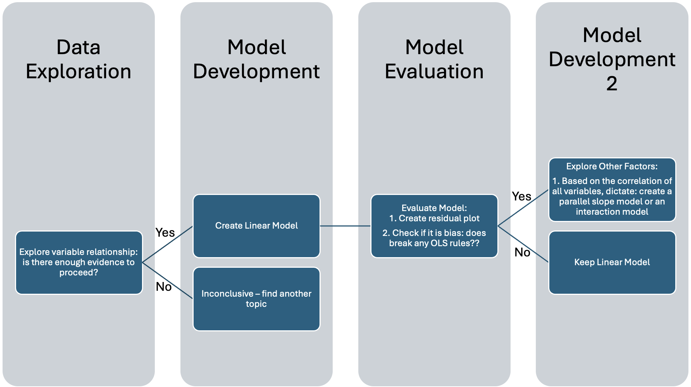
Data Exploration
Load Libraries
Click to view code
library(readxl)
library(ggplot2)
library(tidyr)
library(dplyr)
library(gt)
library(modelr)
library(broom)
library(corrplot)
library(reshape2)Load Data
Click to view code
# Read Excel file
fp<-"data/raw_data_aurora.xls"
data <- read_excel(fp)
# Get the names of all tabs in the Excel file
sheet_names <- excel_sheets(fp)
print(sheet_names)[1] "KPI" "raw_data_aurora" "10yr_obs" "NOAA Data" # Read the first sheet
KPI <- read_excel(fp, sheet = sheet_names[1])
sunlight <- read_excel(fp, sheet = sheet_names[2])Visualize Histograms
1. KPIClick to view code
# Plot KPI Histogram
kpi_hist<-ggplot(KPI, aes(x = KPI)) +
geom_histogram(binwidth = 1, fill = "cornflowerblue", color = "black") +
labs(title = "KPI Histogram", x = "KPI", y = "Frequency")+theme(plot.title = element_text(hjust = 0.5))Click to view code
sightings_hist<-ggplot(KPI, aes(x = Sightings)) +
geom_histogram(binwidth = 1, fill = "cornflowerblue", color = "black") +
labs(title = "Sightings Histogram", x = "Sightings Scale", y = "Frequency")+theme(plot.title = element_text(hjust = 0.5))3. Daylight Length
Click to view code
# Create a data frame with Date and Day_Length (Time in HH:MM format)
daylight_length <- data.frame(Date = sunlight$Date,sunlight$Day_Length)
# Extract the time portion (HH:MM) from daylight_length$sunlight.Day_Length
daylight_length$sunlight.Day_Length <- sub(".*?(\\d{2}:\\d{2}):\\d{2}.*", "\\1", daylight_length$sunlight.Day_Length)
# Convert HH:MM to decimal hours
daylight_length$sunlight.Day_Length <- sapply(daylight_length$sunlight.Day_Length, function(x) {
parts <- strsplit(x, ":")[[1]]
hours <- as.numeric(parts[1])
minutes <- as.numeric(parts[2])
# Convert minutes to decimal form and add to hours
hours + minutes / 60})
# Creating histogram for daylight length
daylight_hist<-ggplot(daylight_length, aes(x = sunlight.Day_Length)) +
geom_histogram(binwidth = 1, fill = "cornflowerblue", color = "black") +
labs(title = "Day Light Length Histogram", x = "Time (hours)", y = "Frequency")+theme(plot.title = element_text(hjust = 0.5))
# Merge the `daylight_length` dataframe with the `KPI` dataframe by Date
merged_data <- merge(KPI, daylight_length, by = "Date", all.x = TRUE)kpi_hist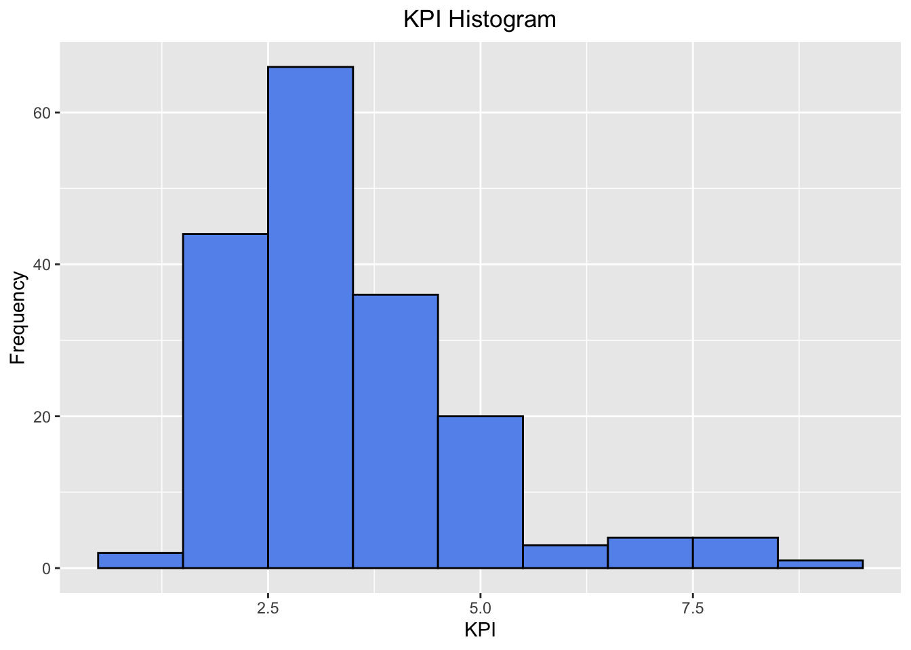
sightings_hist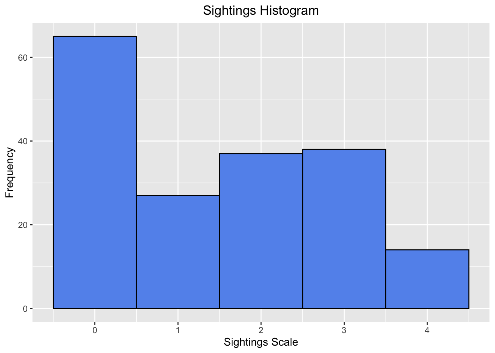
daylight_hist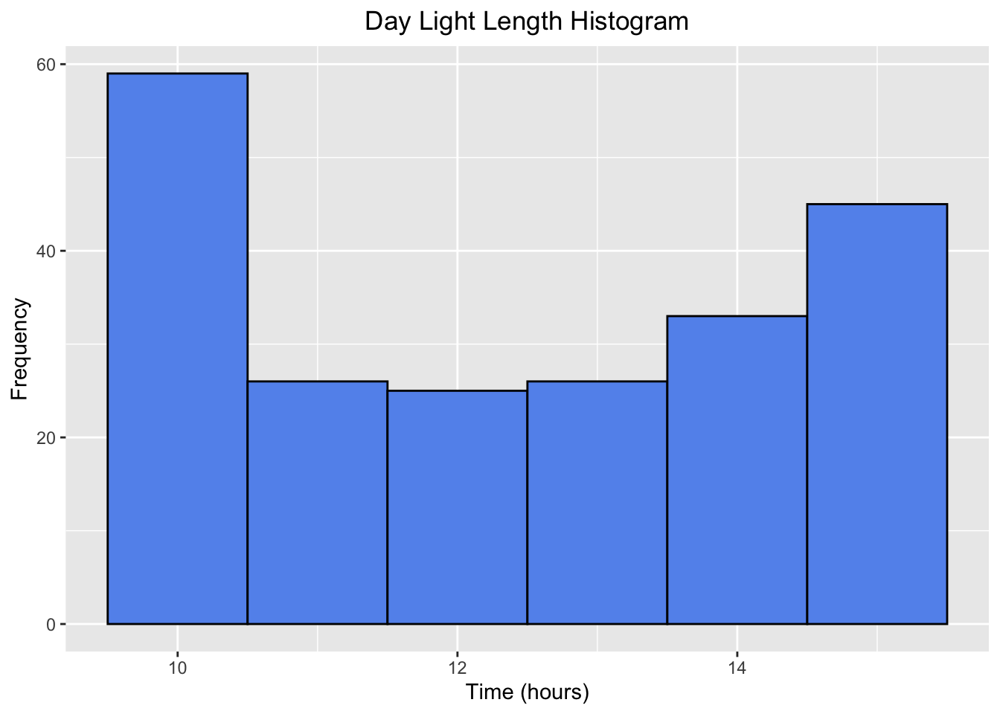
Based on the histograms, we observe that the KPI dataset is negatively skewed, indicating that from June to December 2024, the KPIs were predominantly in the lower range. This suggests lower solar activity during this period.
The Sightings histogram shows a peak at zero, meaning that there were many days with no recorded sightings of the Aurora. This pattern correlates with the high frequency of low KPI values, reinforcing the idea that lower solar activity corresponds to fewer sightings.
In the case of daylight length, the histogram reveals two distinct peaks, corresponding to the two extremes: 10 hours and 15 hours of daylight. These represent the typical daylight durations in the dataset, which spans three seasons: Summer, Fall, and part of Winter.
Visualizing the Relationship Between KPI & Sightings
Click to view code
# Reshape data to long format for easier ggplot handling
data_long <- pivot_longer(KPI, cols = c(KPI, Sightings))
# Plot with two y-axes and custom legend
KPI_Sightings <- ggplot(KPI, aes(x = Date)) +
geom_line(aes(y = Sightings,
color = "Sightings"),
size = 1) +
geom_line(aes(y = KPI / 10,
color = "KPI"),
size = 1) +
scale_y_continuous(
name = "Sightings Scale",
sec.axis = sec_axis(~ . * 10, name = "KPI") # Rescale back for the secondary axis
) +
labs(
x = "Date (2024)",
title = "KPI and Sightings Over Time",
color = "Sightings Scale"
) +
scale_color_manual(
values = c("Sightings" = "blue", "KPI" = "red"), # Custom colors for Sightings and KPI
labels = c("Sightings", "KPI")
) +
guides(
color = guide_legend(
title = "Sightings Scale",
labels = c("0: None",
"1: Very few observations",
"2: A few observations", "3: Many observations",
"4: Numerous observations")
)
) +
theme_minimal() +
theme(
axis.text.x = element_text(angle = 45, hjust = 1), # Rotate x-axis labels
plot.title = element_text(hjust = 0.5) # Center the plot title
)KPI_Sightings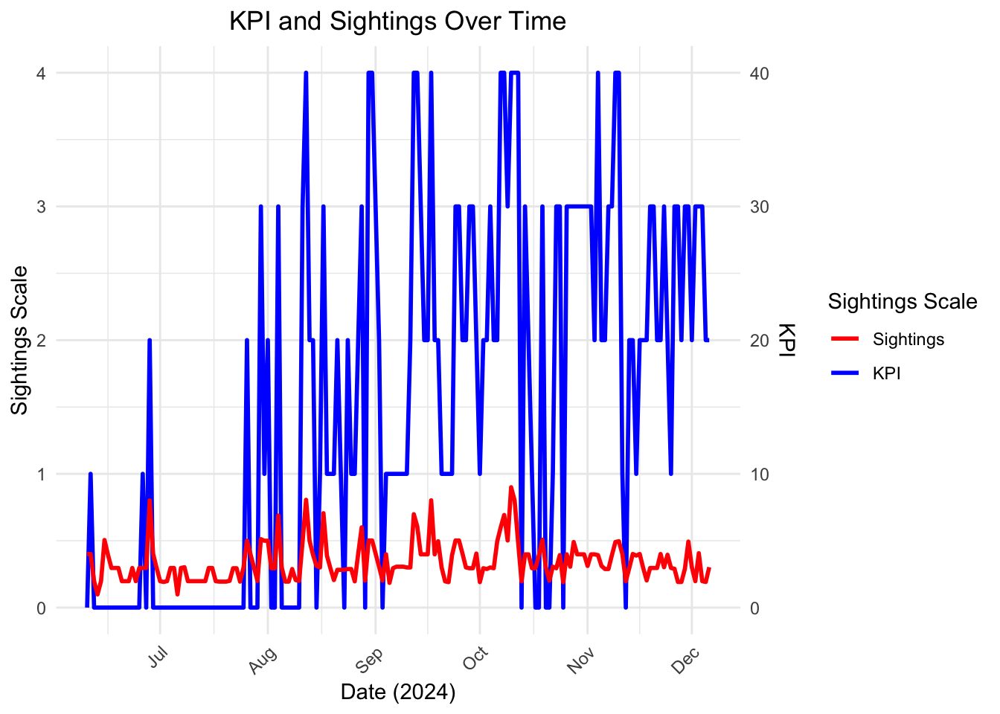
After trending the KPI and Sightings over a 6-month period, we can visualize their relationship. Most of the high peaks in KPI align with corresponding increases in aurora sightings, demonstrating a positive correlation between the two variables.
Click to view code
# Plot scatter plot with custom legend
kpi_sightings <- ggplot(KPI, aes(Sightings, KPI)) +
geom_point(aes(color = as.factor(Sightings)), alpha = 0.7) + # Color points based on Sightings
labs(
x = "Number of Sightings",
y = "KPI",
title = "Scatter Plot of Sightings vs KPI",
color = "Sightings Scale"
) +
scale_color_manual(
values = c("0" = "grey", "1" = "lightblue", "2" = "lightgreen",
"3" = "orange", "4" = "red"), # Custom colors for each Sightings value
labels = c("0: None", # Add custom legend
"1: Very few observations",
"2: A few observations",
"3: Many observations",
"4: Numerous observations")
) +
theme_minimal() +
theme(
plot.title = element_text(hjust = 0.5))# Display the plot
kpi_sightings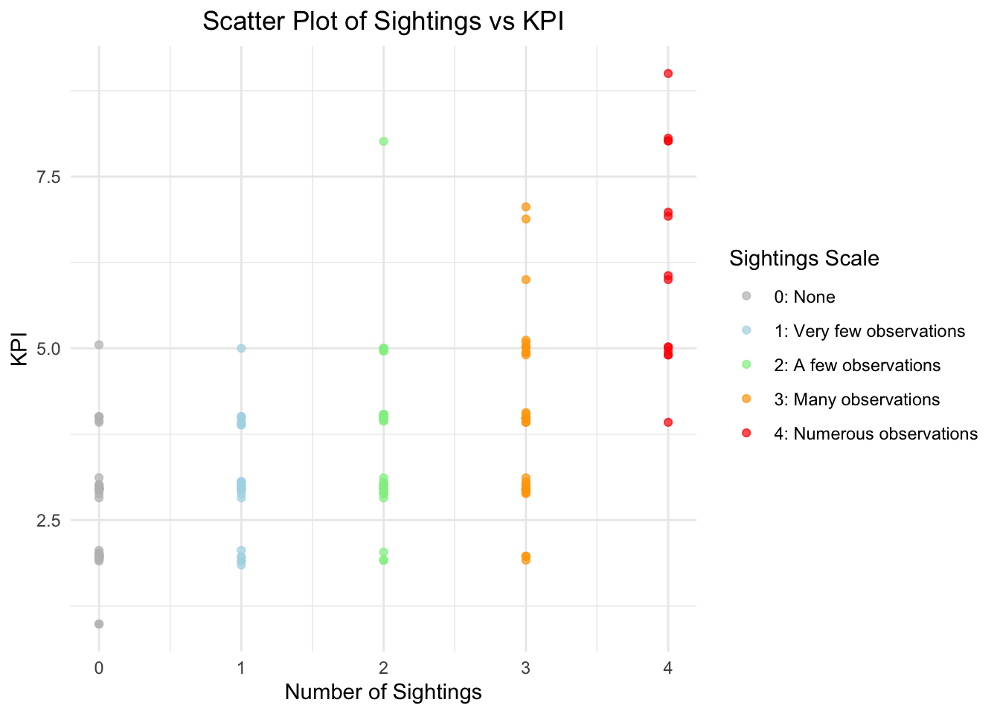
For the majority of data points, the scatter plot supports our initial hypothesis: the higher the KPI, the better the chance of observing the Northern Lights. However, the plot raises several questions: why were there no sightings recorded at such high KPI values (greater than 3). Also, why did we observe numerous sightings at a relatively low KPI value of 2 across different locations? These discrepancies challenge the assumption that KPI is the sole predictor of aurora sightings, suggesting that other factors may be influencing visibility. We will further explore this relationship in the next section.
Let’s explore an additional factor - daylight length:
Plot Daylight LengthClick to view code
day_length_plot<-ggplot(daylight_length, aes(x = Date, y = sunlight.Day_Length)) +
geom_line() +
labs(title = "Seasonal Changes in Daylight Hours",
x = "Date",
y = "Day Length (hours)") +
theme(axis.text.x = element_text(angle = 45, hjust = 1)) + theme(plot.title = element_text(hjust = 0.5))day_length_plot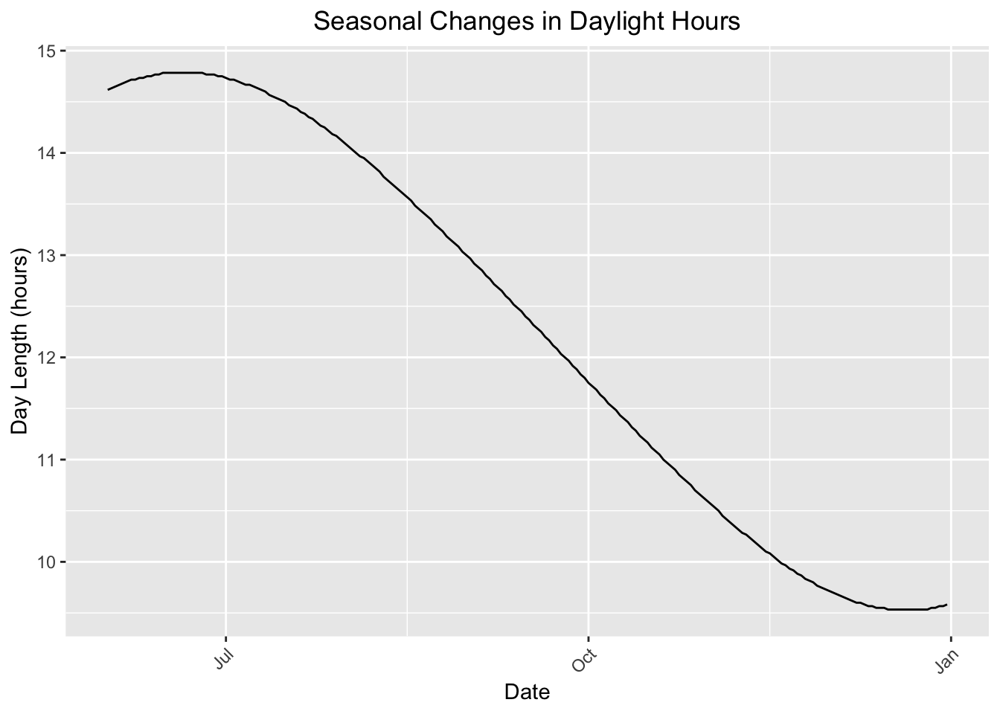
If necessary, we will explore whether seasonality plays a role in Northern Lights sightings. The data collected from an open-source platform appears to be appropriate for this analysis, as it follows a normal cyclical pattern in the duration of daylight across the different seasons.
Heatmap
The following heatmap visualizes the relationships between three variables: KPI, Sightings, and Daylight Length.
Click to view code
# Compute correlation matrix for the selected columns
corr_matrix <- cor(merged_data[2:4])
# Reshape the correlation matrix for ggplot (optional step)
corr_melted <- melt(corr_matrix)
colnames(corr_melted) <- c("Var1", "Var2", "Correlation")
# Plot using ggplot2 with values in the boxes
heatmap<-ggplot(corr_melted, aes(Var1, Var2, fill = Correlation)) +
geom_tile() +
scale_fill_gradient2(low = "blue",
high = "red",
mid = "white",
midpoint = 0,
limit = c(-1, 1),
name = "Correlation") +
geom_text(aes(label = round(Correlation, 2)),
color = "black",
size = 3) + # Add text inside the tiles
theme_minimal() +
theme(axis.text.x = element_text(angle = 45, hjust = 1)) +
labs(title = "Correlation Heatmap", x = "Variables", y = "Variables")# Upload picture
knitr::include_graphics("data/correlationplot.png")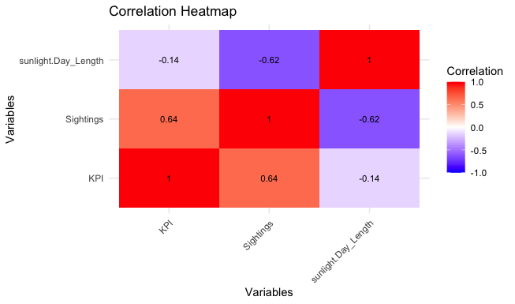
Our analysis shows a moderate positive correlation of 0.64 between KPI and Sightings, indicating that as solar activity increases (higher KPI), aurora sightings tend to rise. However, there is no significant correlation between Daylight Length and KPI, suggesting that the length of daylight does not influence the planetary index. Additionally, a negative correlation of -0.62 was found between Sightings and Daylight Length, meaning that as daylight hours increase, the number of aurora sightings tends to decrease.
This suggests that longer days, typically seen in summer months, may reduce the visibility of auroras despite high solar activity.
Data Exploration Summary & Limitations
Based on the exploratory graphs and statistical analysis, we have identified a moderate relationship between Sightings:KPI and Sightings:Seasonality, providing sufficient evidence to continue exploring these relationships. The next step is to develop a linear model to predict aurora sightings based on the KPI (Planetary Index).
It is important to acknowledge several limitations to this study. First, only six months of data were available for analysis. This relatively small sample size introduces potential bias, as it may not represent broader trends or variability in aurora sightings across different years or locations. Moreover, the data used in this study is from 2024, a year experiencing the end of the solar cycle, which may skew results. For instance, aurora sightings during the Summer of 2024 were particularly high, making this year an outlier compared to more typical patterns.
Another key limitation is the ground truth data used to verify aurora sightings. There is a lack of reliable open-source datasets for verified sightings. We had to rely on public user-generated reports, photographs uploaded by the public from around the world. While this crowdsourced approach is valuable, it introduces several biases. Not all sightings are captured or shared. Furthermore, some people may be unaware of the platform or may not have access to professional-grade equipment capable of capturing the Aurora at lower KPIs. In such cases, smartphone cameras or low-light conditions may not accurately capture the aurora, potentially leading to under-reporting of sightings.
Creating a Linear Model to Predict Sightings Based on KPI
In this section, we build a linear regression model to predict the number of Sightings based on the KPI (Planetarische Kennziffer). Given the observed positive correlation between KPI and Sightings, we aim to quantify this relationship and explore how changes in solar activity, as represented by the KPI, can help forecast the likelihood of aurora sightings:
\[Sightings =\beta_{0}+\beta_{1} \cdot KPI + \varepsilon_i\]
# Create linear model
# Predict the Sightings based on the KPI index
KPI_lm<-lm(Sightings~KPI,data=KPI)
# Display Summary
summary(KPI_lm)
Call:
lm(formula = Sightings ~ KPI, data = KPI)
Residuals:
Min 1Q Median 3Q Max
-2.4945 -0.6243 -0.2114 0.7886 2.4301
Coefficients:
Estimate Std. Error t value Pr(>|t|)
(Intercept) -0.60633 0.20245 -2.995 0.00314 **
KPI 0.61384 0.05473 11.216 < 2e-16 ***
---
Signif. codes: 0 '***' 0.001 '**' 0.01 '*' 0.05 '.' 0.1 ' ' 1
Residual standard error: 1.047 on 178 degrees of freedom
(1 observation deleted due to missingness)
Multiple R-squared: 0.4141, Adjusted R-squared: 0.4108
F-statistic: 125.8 on 1 and 178 DF, p-value: < 2.2e-16Click to view code
# Plot data with the regression line
lm1<-ggplot(KPI, aes(x =KPI,y=Sightings)) +
geom_point() +
geom_smooth(method = "lm", se = FALSE, color = "red") +
labs(x = "KPI",
y = "Sightings Scale",
title = "")lm1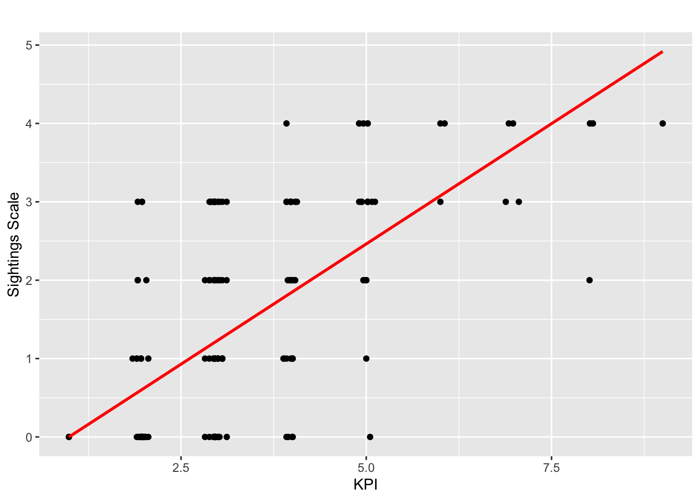
The results of the linear model for predicting Sightings based on the KPI index are as follows:
The Y-intercept is -0.61, meaning that when the KPI is 0 (for the reference season, Fall), the predicted value of Sightings is -0.61.
The KPI coefficient is 0.61, indicating that for every 1 unit increase in KPI, the Sightings are expected to increase by 0.61.
The Adjusted R-squared value is 0.41, meaning that 41% of the variation in Sightings can be explained by the KPI, suggesting a moderately strong relationship between the two variables.
Model Validation - Residual Plot
Click to view code
# Calculate the predicted values
predicted_values <- predict(KPI_lm)
# Calculate the residuals
residuals <- residuals(KPI_lm)
# Create a residual plot using ggplot2
residual<- ggplot(data = KPI_lm, aes(x = predicted_values, y = residuals)) +
geom_point() + # Plot the residuals as points
geom_hline(yintercept = 0, linetype = "dashed", color = "red") + # Add a horizontal line at 0 for reference
labs(title = "Residual Plot", x = "Predicted Values", y = "Residuals") +
theme(plot.title = element_text(hjust = 0.5))
theme_minimal()List of 136
$ line :List of 6
..$ colour : chr "black"
..$ linewidth : num 0.5
..$ linetype : num 1
..$ lineend : chr "butt"
..$ arrow : logi FALSE
..$ inherit.blank: logi TRUE
..- attr(*, "class")= chr [1:2] "element_line" "element"
$ rect :List of 5
..$ fill : chr "white"
..$ colour : chr "black"
..$ linewidth : num 0.5
..$ linetype : num 1
..$ inherit.blank: logi TRUE
..- attr(*, "class")= chr [1:2] "element_rect" "element"
$ text :List of 11
..$ family : chr ""
..$ face : chr "plain"
..$ colour : chr "black"
..$ size : num 11
..$ hjust : num 0.5
..$ vjust : num 0.5
..$ angle : num 0
..$ lineheight : num 0.9
..$ margin : 'margin' num [1:4] 0points 0points 0points 0points
.. ..- attr(*, "unit")= int 8
..$ debug : logi FALSE
..$ inherit.blank: logi TRUE
..- attr(*, "class")= chr [1:2] "element_text" "element"
$ title : NULL
$ aspect.ratio : NULL
$ axis.title : NULL
$ axis.title.x :List of 11
..$ family : NULL
..$ face : NULL
..$ colour : NULL
..$ size : NULL
..$ hjust : NULL
..$ vjust : num 1
..$ angle : NULL
..$ lineheight : NULL
..$ margin : 'margin' num [1:4] 2.75points 0points 0points 0points
.. ..- attr(*, "unit")= int 8
..$ debug : NULL
..$ inherit.blank: logi TRUE
..- attr(*, "class")= chr [1:2] "element_text" "element"
$ axis.title.x.top :List of 11
..$ family : NULL
..$ face : NULL
..$ colour : NULL
..$ size : NULL
..$ hjust : NULL
..$ vjust : num 0
..$ angle : NULL
..$ lineheight : NULL
..$ margin : 'margin' num [1:4] 0points 0points 2.75points 0points
.. ..- attr(*, "unit")= int 8
..$ debug : NULL
..$ inherit.blank: logi TRUE
..- attr(*, "class")= chr [1:2] "element_text" "element"
$ axis.title.x.bottom : NULL
$ axis.title.y :List of 11
..$ family : NULL
..$ face : NULL
..$ colour : NULL
..$ size : NULL
..$ hjust : NULL
..$ vjust : num 1
..$ angle : num 90
..$ lineheight : NULL
..$ margin : 'margin' num [1:4] 0points 2.75points 0points 0points
.. ..- attr(*, "unit")= int 8
..$ debug : NULL
..$ inherit.blank: logi TRUE
..- attr(*, "class")= chr [1:2] "element_text" "element"
$ axis.title.y.left : NULL
$ axis.title.y.right :List of 11
..$ family : NULL
..$ face : NULL
..$ colour : NULL
..$ size : NULL
..$ hjust : NULL
..$ vjust : num 1
..$ angle : num -90
..$ lineheight : NULL
..$ margin : 'margin' num [1:4] 0points 0points 0points 2.75points
.. ..- attr(*, "unit")= int 8
..$ debug : NULL
..$ inherit.blank: logi TRUE
..- attr(*, "class")= chr [1:2] "element_text" "element"
$ axis.text :List of 11
..$ family : NULL
..$ face : NULL
..$ colour : chr "grey30"
..$ size : 'rel' num 0.8
..$ hjust : NULL
..$ vjust : NULL
..$ angle : NULL
..$ lineheight : NULL
..$ margin : NULL
..$ debug : NULL
..$ inherit.blank: logi TRUE
..- attr(*, "class")= chr [1:2] "element_text" "element"
$ axis.text.x :List of 11
..$ family : NULL
..$ face : NULL
..$ colour : NULL
..$ size : NULL
..$ hjust : NULL
..$ vjust : num 1
..$ angle : NULL
..$ lineheight : NULL
..$ margin : 'margin' num [1:4] 2.2points 0points 0points 0points
.. ..- attr(*, "unit")= int 8
..$ debug : NULL
..$ inherit.blank: logi TRUE
..- attr(*, "class")= chr [1:2] "element_text" "element"
$ axis.text.x.top :List of 11
..$ family : NULL
..$ face : NULL
..$ colour : NULL
..$ size : NULL
..$ hjust : NULL
..$ vjust : num 0
..$ angle : NULL
..$ lineheight : NULL
..$ margin : 'margin' num [1:4] 0points 0points 2.2points 0points
.. ..- attr(*, "unit")= int 8
..$ debug : NULL
..$ inherit.blank: logi TRUE
..- attr(*, "class")= chr [1:2] "element_text" "element"
$ axis.text.x.bottom : NULL
$ axis.text.y :List of 11
..$ family : NULL
..$ face : NULL
..$ colour : NULL
..$ size : NULL
..$ hjust : num 1
..$ vjust : NULL
..$ angle : NULL
..$ lineheight : NULL
..$ margin : 'margin' num [1:4] 0points 2.2points 0points 0points
.. ..- attr(*, "unit")= int 8
..$ debug : NULL
..$ inherit.blank: logi TRUE
..- attr(*, "class")= chr [1:2] "element_text" "element"
$ axis.text.y.left : NULL
$ axis.text.y.right :List of 11
..$ family : NULL
..$ face : NULL
..$ colour : NULL
..$ size : NULL
..$ hjust : num 0
..$ vjust : NULL
..$ angle : NULL
..$ lineheight : NULL
..$ margin : 'margin' num [1:4] 0points 0points 0points 2.2points
.. ..- attr(*, "unit")= int 8
..$ debug : NULL
..$ inherit.blank: logi TRUE
..- attr(*, "class")= chr [1:2] "element_text" "element"
$ axis.text.theta : NULL
$ axis.text.r :List of 11
..$ family : NULL
..$ face : NULL
..$ colour : NULL
..$ size : NULL
..$ hjust : num 0.5
..$ vjust : NULL
..$ angle : NULL
..$ lineheight : NULL
..$ margin : 'margin' num [1:4] 0points 2.2points 0points 2.2points
.. ..- attr(*, "unit")= int 8
..$ debug : NULL
..$ inherit.blank: logi TRUE
..- attr(*, "class")= chr [1:2] "element_text" "element"
$ axis.ticks : list()
..- attr(*, "class")= chr [1:2] "element_blank" "element"
$ axis.ticks.x : NULL
$ axis.ticks.x.top : NULL
$ axis.ticks.x.bottom : NULL
$ axis.ticks.y : NULL
$ axis.ticks.y.left : NULL
$ axis.ticks.y.right : NULL
$ axis.ticks.theta : NULL
$ axis.ticks.r : NULL
$ axis.minor.ticks.x.top : NULL
$ axis.minor.ticks.x.bottom : NULL
$ axis.minor.ticks.y.left : NULL
$ axis.minor.ticks.y.right : NULL
$ axis.minor.ticks.theta : NULL
$ axis.minor.ticks.r : NULL
$ axis.ticks.length : 'simpleUnit' num 2.75points
..- attr(*, "unit")= int 8
$ axis.ticks.length.x : NULL
$ axis.ticks.length.x.top : NULL
$ axis.ticks.length.x.bottom : NULL
$ axis.ticks.length.y : NULL
$ axis.ticks.length.y.left : NULL
$ axis.ticks.length.y.right : NULL
$ axis.ticks.length.theta : NULL
$ axis.ticks.length.r : NULL
$ axis.minor.ticks.length : 'rel' num 0.75
$ axis.minor.ticks.length.x : NULL
$ axis.minor.ticks.length.x.top : NULL
$ axis.minor.ticks.length.x.bottom: NULL
$ axis.minor.ticks.length.y : NULL
$ axis.minor.ticks.length.y.left : NULL
$ axis.minor.ticks.length.y.right : NULL
$ axis.minor.ticks.length.theta : NULL
$ axis.minor.ticks.length.r : NULL
$ axis.line : list()
..- attr(*, "class")= chr [1:2] "element_blank" "element"
$ axis.line.x : NULL
$ axis.line.x.top : NULL
$ axis.line.x.bottom : NULL
$ axis.line.y : NULL
$ axis.line.y.left : NULL
$ axis.line.y.right : NULL
$ axis.line.theta : NULL
$ axis.line.r : NULL
$ legend.background : list()
..- attr(*, "class")= chr [1:2] "element_blank" "element"
$ legend.margin : 'margin' num [1:4] 5.5points 5.5points 5.5points 5.5points
..- attr(*, "unit")= int 8
$ legend.spacing : 'simpleUnit' num 11points
..- attr(*, "unit")= int 8
$ legend.spacing.x : NULL
$ legend.spacing.y : NULL
$ legend.key : list()
..- attr(*, "class")= chr [1:2] "element_blank" "element"
$ legend.key.size : 'simpleUnit' num 1.2lines
..- attr(*, "unit")= int 3
$ legend.key.height : NULL
$ legend.key.width : NULL
$ legend.key.spacing : 'simpleUnit' num 5.5points
..- attr(*, "unit")= int 8
$ legend.key.spacing.x : NULL
$ legend.key.spacing.y : NULL
$ legend.frame : NULL
$ legend.ticks : NULL
$ legend.ticks.length : 'rel' num 0.2
$ legend.axis.line : NULL
$ legend.text :List of 11
..$ family : NULL
..$ face : NULL
..$ colour : NULL
..$ size : 'rel' num 0.8
..$ hjust : NULL
..$ vjust : NULL
..$ angle : NULL
..$ lineheight : NULL
..$ margin : NULL
..$ debug : NULL
..$ inherit.blank: logi TRUE
..- attr(*, "class")= chr [1:2] "element_text" "element"
$ legend.text.position : NULL
$ legend.title :List of 11
..$ family : NULL
..$ face : NULL
..$ colour : NULL
..$ size : NULL
..$ hjust : num 0
..$ vjust : NULL
..$ angle : NULL
..$ lineheight : NULL
..$ margin : NULL
..$ debug : NULL
..$ inherit.blank: logi TRUE
..- attr(*, "class")= chr [1:2] "element_text" "element"
$ legend.title.position : NULL
$ legend.position : chr "right"
$ legend.position.inside : NULL
$ legend.direction : NULL
$ legend.byrow : NULL
$ legend.justification : chr "center"
$ legend.justification.top : NULL
$ legend.justification.bottom : NULL
$ legend.justification.left : NULL
$ legend.justification.right : NULL
$ legend.justification.inside : NULL
$ legend.location : NULL
$ legend.box : NULL
$ legend.box.just : NULL
$ legend.box.margin : 'margin' num [1:4] 0cm 0cm 0cm 0cm
..- attr(*, "unit")= int 1
$ legend.box.background : list()
..- attr(*, "class")= chr [1:2] "element_blank" "element"
$ legend.box.spacing : 'simpleUnit' num 11points
..- attr(*, "unit")= int 8
[list output truncated]
- attr(*, "class")= chr [1:2] "theme" "gg"
- attr(*, "complete")= logi TRUE
- attr(*, "validate")= logi TRUEresidual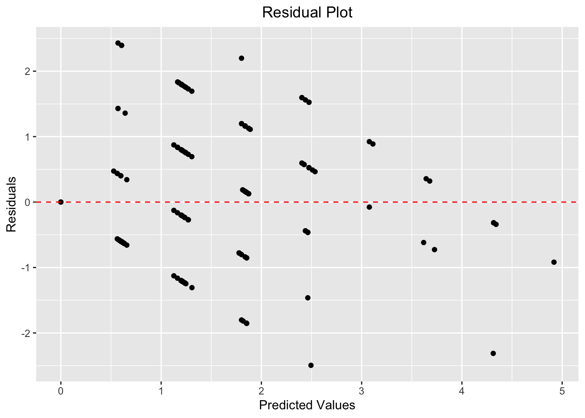
Residual Model Assessment
Based on the residual plot, the model appears biased, potentially overestimating lower Sightings and underestimating higher Sightings. Additionally, the variance is inconsistent, which could indicate heteroscedasticity.
Given the moderately strong correlation between Sightings and Seasonality, and the weak correlation between KPI and Seasonality, we will proceed with a parallel slope model to better account for seasonality’s impact on aurora sightings.
Creating a Parallel Slope Model
To address the potential bias in the initial linear model, we will incorporate additional factors, including seasonality, into a more refined parallel slope model.
Step 1: Categorizing by Season The first step is to categorize the dataset based on its corresponding season. The author determined the season using the duration of daylight, applying the following criteria:
Summer: Daylight duration of 13 hours or more Fall: Daylight duration of 10 to less than 13 hours Winter: Daylight duration of less than 10 hours This seasonal classification allows us to analyze the impact of seasonality on aurora sightings, particularly in relation to changes in daylight length throughout the year.
Step 2: Parallel Slope Model To capture the relationship between Sightings, KPI, and Seasonality, we developed a parallel slope model. The model is specified as:
\[Sightings =\beta_{0}+\beta_{1} \cdot KPI +\beta_{2} \cdot Seasonality + \varepsilon_i\] Where:
B0 is the intercept term,
B1 is the coefficient for the KPI,
B2 is the coefficient for Seasonality,
ɛ is the error term for each observation
Step 1
Click to view code
# Create a new category column based on sunlight.Day_Length
merged_data$Season <- ifelse(merged_data$sunlight.Day_Length >= 13, "Summer",
ifelse(merged_data$sunlight.Day_Length < 13 & merged_data$sunlight.Day_Length >= 10, "Fall",
"Winter"))
merged_data <- na.omit(merged_data)Step 2
# Create parallel model
KPI_2 <- merged_data %>% mutate(Season = as.factor(Season)) # Ensure our year variable is treated as a categorical variable
KPI_lm2 <- lm(Sightings ~ KPI + Season, data = KPI_2)
summary(KPI_lm2)
Call:
lm(formula = Sightings ~ KPI + Season, data = KPI_2)
Residuals:
Min 1Q Median 3Q Max
-2.22000 -0.53772 0.01636 0.50301 2.30713
Coefficients:
Estimate Std. Error t value Pr(>|t|)
(Intercept) 0.01791 0.18596 0.096 0.923375
KPI 0.56132 0.04288 13.092 < 2e-16 ***
SeasonSummer -1.14241 0.12821 -8.911 6.26e-16 ***
SeasonWinter 0.81806 0.21084 3.880 0.000147 ***
---
Signif. codes: 0 '***' 0.001 '**' 0.01 '*' 0.05 '.' 0.1 ' ' 1
Residual standard error: 0.7955 on 176 degrees of freedom
Multiple R-squared: 0.6655, Adjusted R-squared: 0.6598
F-statistic: 116.7 on 3 and 176 DF, p-value: < 2.2e-16# Augment the data with fitted values and other model information
augmented_data <- augment(KPI_lm2, data = KPI_2)
# Create plot
parallel_slope<-ggplot(KPI_2, aes(x = KPI, y = Sightings, color = Season)) +
geom_point() + # Scatter plot of KPI vs Sightings
geom_line(data = augmented_data, aes(x = KPI, y = .fitted, color = Season)) + # Add fitted line
labs(x = "KPI",
y = "Sightings",
title = "Parallel slopes Model: Sightings Vs KPI") +
scale_colour_discrete(name = "Season") # Add color legend for Seasonparallel_slope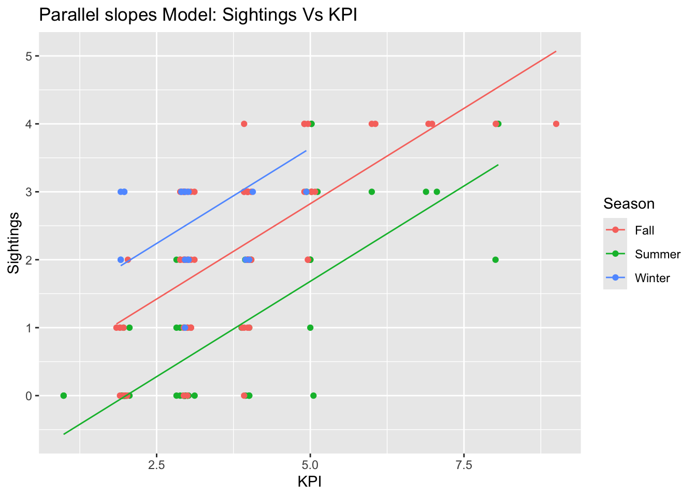
The parallel slope model shows a significant improvement over the original linear model. The Adjusted R-squared value has increased, indicating that the improvement in the model’s fit is not merely due to adding more predictors, but rather due to the inclusion of Seasonality as an important factor. The KPI coefficient in the parallel model is slightly smaller than in the original model, suggesting that Seasonality is explaining some of the variance in Sightings that was previously attributed to KPI.
However, some aspects of the model did not improve. The F-statistic remains quite large, indicating that both models are still highly significant. While the addition of Seasonality helps explain some of the variance in Sightings, it does not dramatically change the overall significance of the model. This suggests that while Seasonality adds value, the correlation relationship between KPI and Sightings remains robust and highly significant.
Although we have seen improvements in the models, the two variables explored—KPI and Seasonality—do not fully and accurately predict Aurora sightings. While there is a clear relationship between KPI and Sightings, other factors must also be considered. For instance, cloud coverage in the area can obscure visibility, and the moon phase plays a crucial role: the brighter the moon, the less likely you are to see the Northern Lights with the naked eye due to increased light pollution. These could be incorporated in the parallel slope model.
If further analysis is possible, I would explore the relationship between these additional factors—such as Solar Wind Speed and Solar Flares—and KPI within the parallel slope model framework. Given that these factors likely interact with the KPI, an interaction model might be necessary to better capture how they influence Aurora sightings.
So.. How Do I Increase My Chances of Seeing the Northern Lights?
💡 Higher KPI = Better Chances The higher the KPI, the brighter your chances of seeing the aurora!
🌙 Dark Skies Are a Must The darker, the better! Look for clear skies during long nights (check the cloud forecast and moon phase)
🧭 Go North! Head toward the Arctic Circle! The closer you are to the poles (high latitudes), the better the view of the Northern Lights.
🔆 Solar Cycle The next 2-3 years are PRIME for Northern Lights sightings! Get ready—high KPIs are coming!!!